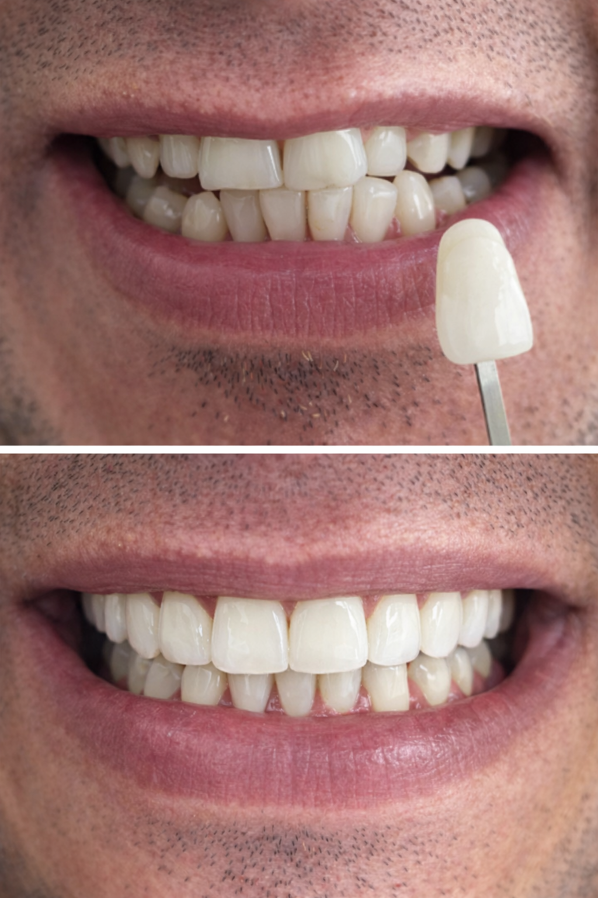

Dentes manchados
Quando a alteração de cor compromete a estética e o clareamento isolado já não é suficiente.

Transforme o seu sorriso com naturalidade, precisão e estética avançada.
Resposta rápida pelo WhatsApp. Procedimentos realizados após avaliação clínica.
As facetas dentárias são indicadas para transformar o sorriso com alta precisão estética, corrigindo detalhes de forma, cor, proporção e alinhamento de maneira planejada e personalizada.
Pacientes de Alphaville e região procuram as facetas de porcelana ou resina quando desejam um resultado elegante, natural e compatível com o rosto.

Quando a alteração de cor compromete a estética e o clareamento isolado já não é suficiente.
Casos em que o desgaste altera comprimento, contorno e impacto visual do sorriso.
Correções estéticas pontuais em situações selecionadas, com planejamento cuidadoso.
Fechamento de pequenos diastemas com melhor proporção e integração visual.
Para quem deseja um sorriso mais equilibrado, simétrico e sofisticado.
Refina proporção, contorno e cor do sorriso com acabamento visual mais elegante.
O desenho do novo sorriso respeita rosto, personalidade e naturalidade do paciente.
Uma mudança bem indicada pode elevar confiança, presença e autoestima no dia a dia.
Excelente estabilidade de cor, acabamento refinado e estética mais sofisticada para planejamento de longo prazo.
Alternativa versátil com ótimo resultado estético quando bem indicada e executada com técnica apurada.
Análise do sorriso, proporções faciais e objetivos do paciente.
Definição visual do novo sorriso para orientar decisões com mais precisão.
Etapa conduzida com critério técnico para receber as facetas conforme o caso.
Instalação e acabamento final para integração natural com o sorriso.
Isso depende do caso e do planejamento. A conduta ideal varia conforme forma, alinhamento e objetivo estético.
Ambas podem ter excelente indicação, mas diferem em acabamento, estabilidade e estratégia clínica.
A longevidade depende do material, dos hábitos do paciente e do acompanhamento periódico do caso.
Facetas com indicação criteriosa, planejamento individual e foco em naturalidade para pacientes de Alphaville e região.
Agende uma avaliação para entender se facetas dentárias são a melhor solução estética para o seu caso. Procedimentos realizados após avaliação clínica.